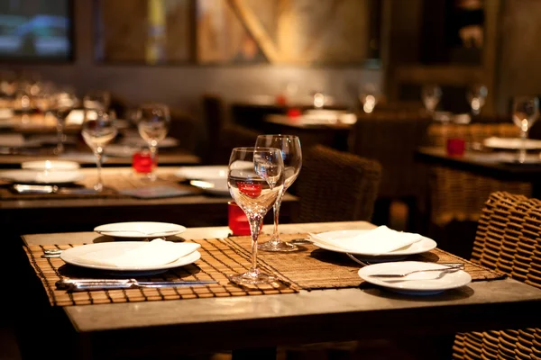

Os restaurantes do Brasil oferecem uma rica diversidade culinária, desde as renomadas churrascarias até restaurantes regionais com influências culturais variadas. Muitos estabelecimentos incorporam ingredientes locais e técnicas modernas,proporcionando uma experiência gastronômica contemporânea.
A culinária brasileira, moldada por diversas influências, oferece pratos únicos e saborosos, enquanto a comida de rua, como pastéis, acarajé e coxinha, desempenha um papel importante.
Além disso, o Brasil é conhecido por sua paixão pelo café, com inumeras cafeterias. A rica cultura culinária e hospitalidade fazem dos restaurantes brasileiros um destino imperdível para os amantes da comida.
|  |